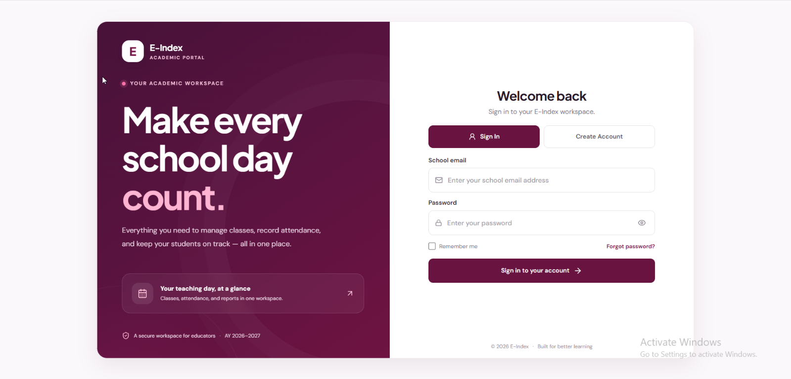
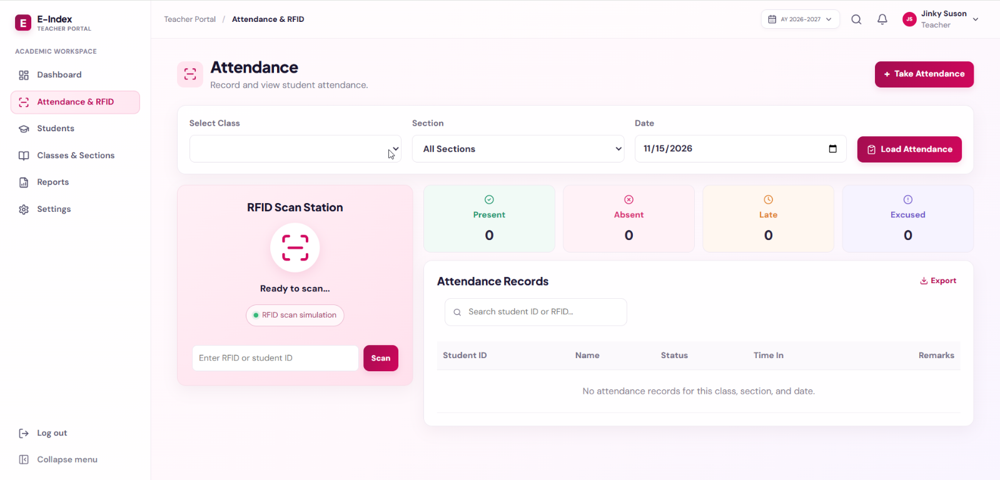
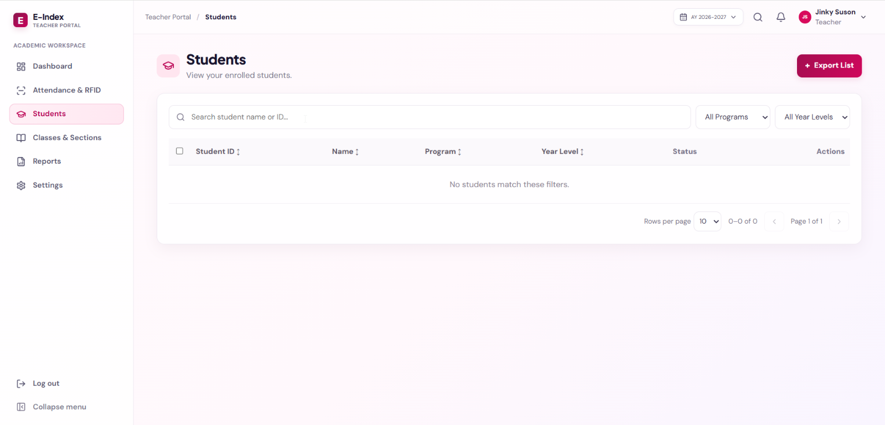
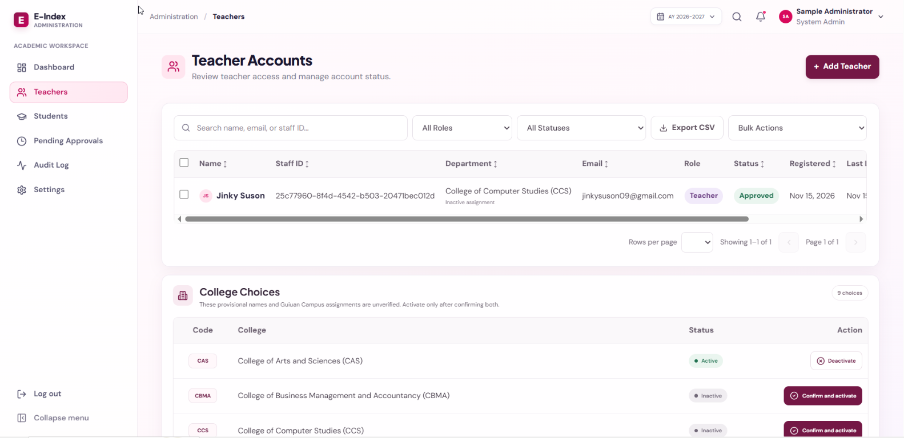
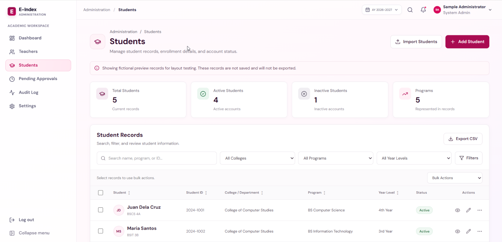

CASE STUDY / ACADEMIC PORTAL
E-Index System
I designed and built an attendance management system with teacher and administration portals for attendance, student and class records, and reports.

Problem & Project Context
I built E-Index as an attendance management system with separate Teacher Portal and Administration workspaces. I brought attendance, student and class records, reports, and administrative tools together in those interfaces.
Project Objectives & Target Users
I designed E-Index for teachers and administrators who use separate workspaces. The Teacher Portal supports teachers, while the Administration interface supports administrators.
My Role
I was the sole designer and developer for E-Index. I designed both portals, built the frontend and backend, and handled deployment.
Design Process & Information Architecture
I organized the Teacher Portal around Dashboard, Attendance & RFID, Students, Classes & Sections, Reports, and Settings. I organized Administration around Dashboard, Teachers, Students, Pending Approvals, Audit Log, and Settings.
Interface Patterns
I placed search and filters above student and teacher tables to make records easier to browse. I used summary cards on dashboards and positioned an RFID scan simulation beside attendance records.
Final UI
I designed and built the Teacher Portal and Administration interfaces shown below. The screens highlight the dashboards, attendance, and student and teacher records.
Teacher Portal



Administration



The Administration student-record screen identifies its rows as fictional preview data for layout testing.
RFID-related Interface Features
I included an RFID scan simulation beside attendance records in the Teacher Portal. This places the scan interaction alongside the attendance information it supports.
Tech Stack & Deployment
Frontend: HTML, CSS, JavaScript
Backend: Node.js
Database: MySQL on Aiven, managed with HeidiSQL
Hosting: Render
View the E-Index System live site .